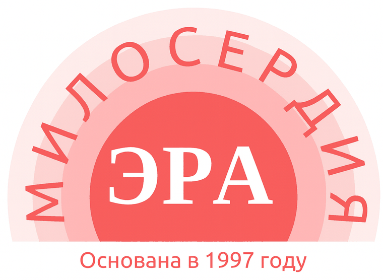
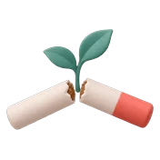
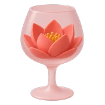
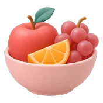
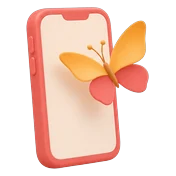
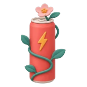

Научный подход
Психология зависимого поведения и работа с глубинными причинами дурных привычек, а не только с их внешними проявлениями.
Центр по избавлению от дурных привычек «ЭРА МИЛОСЕРДИЯ»
Методики, разработанные и проверенные практикующими консультантами на основе научного подхода, духовных знаний и адаптированные для современного потребителя.
Центр основан и действует под руководством Вячеслава Рузова (Е. М. Патита Паваны даса)

Каталог
Выберите раздел — в каждом описан подход и собраны лекции по теме.

КурениеМетодика избавления от никотиновой зависимости: чёткий план действий на три недели.Подробнее
АлкогольЦелостный путь к устойчивой трезвости: тело, ум, воля и глубинные причины зависимости.Подробнее
Пищевая зависимостьГармоничные отношения с едой: стабильный результат без жёстких ограничений.Подробнее
Цифровая зависимостьВернуть контроль над своей реальностью. Помощь взрослым и детям.Подробнее СозависимостьКак помочь близкому человеку и сохранить отношения, веру и силы.Подробнее
ЭнергетикиКофе, чай, энергетики: устранить саму потребность в искусственных стимуляторах.Подробнее Ранний подъёмУстойчивый и естественный распорядок дня: сон, отбой и лёгкое пробуждение.Подробнее 4 регулирующих принципаПомощь искателям истины в следовании регулирующим принципам свободы.ПодробнееПодход
Психология зависимого поведения и работа с глубинными причинами дурных привычек, а не только с их внешними проявлениями.
Принципы ведической духовной традиции. Духовные решения материальных проблем проверены временем и опытом тысяч людей.
Методики разработаны и проверены практикующими консультантами и адаптированы для современного человека.
Консультант центра
Специалист по избавлению от вредных привычек и формированию устойчивой трезвости
«Устойчивое освобождение от зависимости начинается не с борьбы с привычкой, а с изменения сознания, ценностей и образа жизни человека».
О консультантеКак мы работаем
Слушать и смотреть
Послушайте, как мы смотрим на природу зависимостей, — по одной лекции из каждого подкаста.
Подкаст «Как бросить курить?»
Не удалось загрузить запись. Откройте её на Podster.
Подкаст «Отказ от алкоголя»
Не удалось загрузить запись. Откройте её на Podster.
Подкаст «Свобода от переедания»
Не удалось загрузить запись. Откройте её на Podster.
Подкаст «Цифровая зависимость»
Не удалось загрузить запись. Откройте её на Podster.
Интервью с Вячеславом Рузовым
Будьте на связи
О центре
Центр действует на базе Автономной некоммерческой организации Культурно-просветительский центр «ЭРА МИЛОСЕРДИЯ».
Заполните анкету — с этого начинается работа. Или просто напишите нам: ответим на вопросы и подскажем, с чего начать.